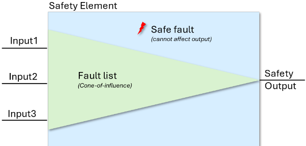
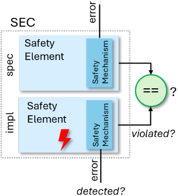
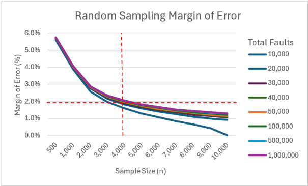
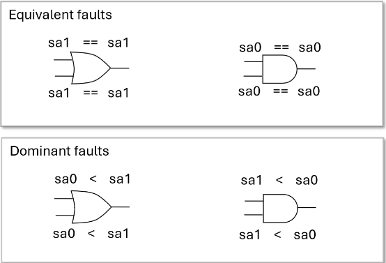
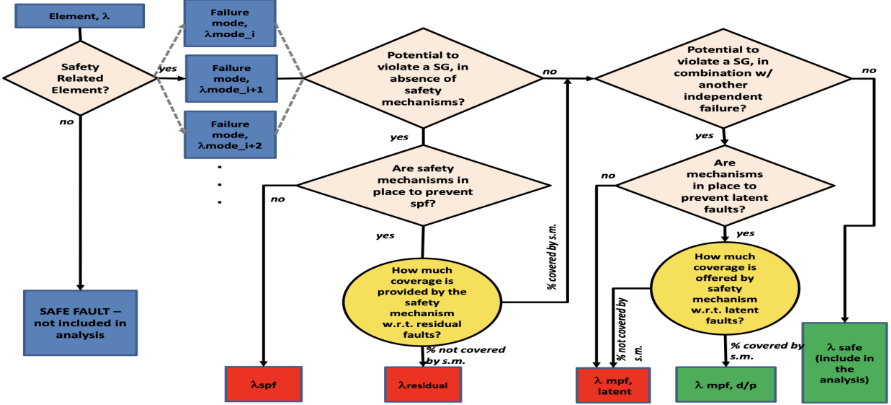

使用 Formal 开展功能安全工作的经验教训
该论文面向 ISO 26262 汽车功能安全硬件开发，系统总结使用 formal（FPV/SEC）开展安全机制验证与随机故障测试的 12 条实践经验。方法上，利用 formal 内建综合与 cone-of-influence（COI）生成并剪枝故障列表，用 SEC 将设计实例化两份并在其中一份注入故障，据此判定 SPF/RF/MPF 等故障分类；用统计采样控制 campaign 规模，并借助 nondeterminism 做 latent fault 多点故障分析。关键结论：约 4,000 个随机采样故障即可在 99% 置信度下将误差控制在 2% 以内，满足多数 ASIL 等级的 DC 计算需求；随机采样 campaign 中应避免 fault collapsing；RTL 故障测试比 gate-level 更悲观、更稳妥；formal 宜与 simulation/emulation 混合使用，CRC 等机制可直接引用 ISO Part 5 Appendix D 的 DC 表格。
如何在 ISO 26262 功能安全硬件开发中有效使用 formal 技术：一是验证安全机制（parity/ECC/checksum、lockstep/冗余、CRC）的正确性，并在向既有设计 retrofit 安全机制时确认原设计功能不受影响；二是开展随机故障测试以确定 diagnostic coverage（DC），包括故障列表生成、safe fault 剪枝、故障分类（SPF/RF/MPF/DPF）、latent fault 分析，以及需要测试多少故障、在 RTL 还是 gate-level 上测试、formal 不收敛时如何处理、工具术语与 ISO 术语不一致等工程问题。
基于 formal FPV 与 SEC 的功能安全流程：利用 formal 内建综合生成故障列表，并用 COI 报告剪除安全路径锥之外的 safe fault；通过 SEC 将 safety element 同时作为 spec 与 implementation、在 implementation 上注入故障，判定故障是否影响安全输出以及是否被 safety mechanism/alarm 检测；用统计置信区间公式确定采样规模（约 4,000 故障、99% 置信度、误差约 2%）；无商业 formal safety app 时可用 FPV 自建 fault injector（nondeterministic fault ID 变量加条件 cut point 指令注入 stuck-at/transient 故障）；latent fault 分析利用 formal nondeterminism 同时测试所有设计故障并在 safety mechanism 中注入第二故障；建议 formal 作为前端故障列表生成与结果合并工具，与 simulation/emulation 混合使用；对 CRC 等形式验证困难模块建议 C-to-RTL sequential equivalency checking（DPV），或直接引用 ISO 26262 Part 5 Appendix D 的 DC 表格并辅以 safety rationale。
约 4,000 个随机采样故障即可在 99% 置信度下将 margin of error 降至 2% 或更低，对多数 ASIL 等级的 DC 计算足够
Gate-level netlist 的故障数量可达 RTL 的 10 倍；RTL 故障测试更悲观，若 RTL 满足 ASIL 要求则 gate-level 必然满足
ASIL B 要求 DC 90%、ASIL C 要求 97%（Table 1）；ISO Part 5 Appendix D 表格给出 low/medium/high 对应 60%/90%/99% 的 DC，CRC 在表 D.6 中属 high（99%）
latent fault 分析中，若超过 60% 的 formal properties 成功收敛且无 undetectable faults，即使 40% 的 properties 不收敛也满足 ASIL B 要求
fault collapsing 可将 gate-level 故障列表削减约一半（引用文献 [3][4]），但论文论证其在随机采样 campaign 中不必要且违背随机性意图
COI 之外的数百甚至上千个 safe fault 可被安全移除，明显优于用标准综合工具生成故障列表
这是一篇经验教训（lessons learned）型论文，不提出新算法，价值在于对常见做法的纠偏与工程指导：论证随机采样故障 campaign 中 fault collapsing 不必要且破坏均匀无偏分布；给出约 4,000 故障采样规模的统计学依据；主张优先在 RTL 而非 gate-level 做故障测试（更悲观、更稳妥）；提出用 formal COI 报告替代繁琐的 FTA 来证明设计分区独立性以支撑 FMEDA 结构划分；指出商业 formal safety app 术语与 ISO 26262 术语不一致、'safe' 一词在 formal 与 simulation 中含义不同的风险；并强调 formal 应作为前端故障列表生成与结果合并工具与 simulation/emulation 混合使用，而非独立承担全部故障测试。
相关度级别：high
命中能力域：2.5 功能安全与安全机制 | 2.6 Fault simulation/Z01X/TFMEA
理由：论文直接命中团队 2.5（功能安全与安全机制）与 2.6（Fault simulation/Z01X/TFMEA）两个能力域：团队承担 ISO 26262 ASIL-B/ASIL-D 的 Safety Manual、FMEA/DFMEA/DFA、safety verification、diagnostic coverage 与 latent fault 分析，并开展基于功能 stimulus 的 fault injection、fault grading 与 FuSa TFMEA/FMEDA 论证。论文给出的 formal 前端故障列表生成与 COI 剪枝、SEC 故障注入与 SPF/RF/MPF 分类、约 4,000 故障统计采样、RTL vs gate-level 抽象层级选择、formal 与 simulation/emulation 混合及结果合并等经验，可直接指导团队故障 campaign 的工具选型、工作量评估与 DC 论证方式；对 ECC/parity/CRC 等存储与高速互连 IP 常见安全机制的验证路径选择（model checking、C-to-RTL SEC/DPV、Appendix D 表格）也有直接参考价值。论文与 2.7 CyberSec/自动化仅弱相关（提及 Tcl API 脚本化自动生成故障列表），不构成实质命中，故不列入。
建议动作：深入精读并做内部分享
摘要 - 功能安全要求对安全机制进行功能验证以消除任何系统性失效，并要求评估由随机硬件失效引起的安全违规。形式化技术对这两者而言都是极佳的工具。它可用于验证安全功能，或在插入新的安全机制时确保设计等价。此外，它非常适合为随机故障活动生成故障列表，并且既可以与仿真或硬件仿真等其他工具协同使用，也可以作为独立工具用于随机故障活动。本文分享了将形式化方法用于功能安全的流程、由此产生的各类问题，以及从将形式化方法应用于汽车功能安全中所获得的多条经验教训，以供他人在其形式化功能安全分析中受益。
在功能安全硬件开发中，有两个领域可以充分体现形式化技术的巨大价值：安全要素和安全机制的功能验证（[1], Part 5, 5.7），以及故障注入测试（[1], Part 5, 5.9）。
形式化技术在硬件功能验证中的应用是一个宽泛的话题，超出了本文的讨论范围。然而，使用形式化方法来验证安全组件则与本文密切相关。通常，设计会通过加装安全机制来满足 ASIL 要求（[1]），以便这些器件能够销售到汽车行业。某些安全机制非常适合采用形式化模型检测，例如奇偶校验、纠错码（ECC）和校验和计算。由于这些机制主要是组合逻辑，形式化方法非常适合快速证明这些实现的正确性。其他机制如锁步和冗余则非常适合采用形式化时序等价性检查（SEC）。事实上，在向现有设计加装安全机制时，我建议使用 SEC 来验证原设计不受新安全机制的影响。
其中一种安全机制——循环冗余校验（CRC）——对形式化方法构成了重大挑战。从本质上讲，CRC 是循环性的，通常需要多个时钟周期来完成乘法（通过移位实现）或除法运算——由于状态空间庞大，形式化模型检测难以处理这两类运算。根据我的经验，形式化模型检测和 RTL SEC 都难以分析 CRC 模块。CRC 对形式化方法来说可能很难，但并非无法实现。当然，规模较小的实现更容易处理，但安全应用或通信协议中通常使用较大的多项式，其多项式位数一般为 9、17、33 等，这给形式化方法带来了很大的设计复杂度。在这种情况下，我建议考虑所谓的 C-to-RTL 时序等价性检查（sequential equivalency checking），也称为数据通路验证（DPV）。通过抽象到 C 算法层面，对 CRC 的形式化验证是有可能实现的。
形式化方法在功能安全中的第二个用途是随机故障测试。随机故障测试的目标是确定一种称为诊断覆盖率（diagnostic coverage，DC）的安全度量指标。诊断覆盖率表示设计中与安全相关、并被用于检测随机失效的安全机制所覆盖的部分所占的百分比。为了确定诊断覆盖率，首先需要构建一个故障列表。形式化方法可以轻松生成故障列表，因为它在执行分析之前会对设计进行综合。事实上，安全流程通常使用形式化方法作为前端来生成故障列表，然后基于这些列表运行故障仿真（或硬件仿真）。由于形式化方法内置了确定其目标的影响锥（cone-of-influence，COI）的机制，因此可以利用该 COI 来判断某个故障是否安全。任何位于安全路径 COI 之外的故障，根据定义都是“安全”的，因为它不可能影响安全输出（见图 1）。这种内置特性便于进行故障剪枝（fault pruning），而形式化方法还可以通过故障折叠（fault collapsing）进一步消除故障的可能性，即通过找出等价故障或支配故障来消除故障。

故障列表创建完成后，将执行故障注入，以确定这些故障能否在设计中传播并影响安全输出。在形式化方法中实现这一点的最简单方式是使用时序等价性检查（图 2）。将安全要素自身同时作为规约和实现进行比较，并向实现中注入一个故障。如果安全输出未受影响，那么根据定义该故障是“安全”的。如果故障影响了安全输出，那么安全机制或报警器应当检测到它。如果故障落在安全报警器的 COI 之外，那么该故障被称为单点故障（single-point fault，SPF）。如果故障未被检测到，则被视为残余故障（residual fault，RF）。如果故障被检测到，则它属于多点故障（multi-point fault，MPF）范畴，更具体地说是双点故障（dual-point fault，DPF），因为标准要求测试的并发故障数不超过两个（[1], Part 1, 1.123; [1], Part 7, 7.4.3.2）。

形式化工具供应商已经创建了专门的安全应用（safety apps），用于自动化创建故障列表、运行形式化随机故障测试、与其他工具流程集成，以及合并不同工具流程的结果。通常，这些形式化应用并不计算 DC，但其结果可以在 FMEDA 1 中用于执行各种度量指标的计算。
1 失效模式、影响与诊断分析。
II. 随机故障测试的经验
经验教训 #2：利用形式化工具的影响锥（cone-of-influence）识别安全故障。
使用形式化工具生成故障列表是形式化方法在安全流程中的主要用途之一。再次强调，原因在于形式化工具会对设计执行综合。显然，由项目自身的设计综合工具生成的故障列表同样可以满足要求。然而，形式化工具具有一项内置特性，使其在生成故障列表方面尤为有用——即对其分析目标的影响锥追踪。安全路径输出可以用一个简单的 cover property 来描述，形式化工具会将其回溯至所有主输入：
所有形式化工具都能生成影响锥报告，其中列出影响安全输出的各种设计元素（在本例中即 cover property c1）。事实上，大多数工具都提供 Tcl API，无需为形式化安全应用（safety app）单独获取许可，即可通过脚本编写并自动化地生成故障列表。形式化工具是生成故障列表的理想选择，因为它能够剔除影响锥之外的所有安全故障（[1]，Part 1，1.123）。数百甚至数千个故障可以从故障列表中安全地移除，这是使用标准综合工具生成故障列表所无法比拟的显著优势。
经验教训 #3——并非所有故障对于随机故障测试活动都是必需的——通常约 4,000 个故障即可。
在进行随机故障测试时会浮现一个问题：“需要测试多少个故障？”工程师出于天性总想测试所有内容。设计通常包含数千乃至数百万个需要测试的故障，这对标准的事件驱动仿真器而言并不现实。因此，许多公司转而借助硬件仿真（emulation）来加快测试速度，或者采用专注于故障传播、借助大规模并行化来快速处理数千个故障的专用仿真器。
然而，随机故障测试的最终目标是确定某个部件是否达到或超过特定的 ASIL 等级要求（表 1）。因此，需要测试的故障数量实际上取决于你在诊断覆盖率计算中能够接受的误差余量。
| ASIL B | ASIL C | ASIL D | |
|---|---|---|---|
| Single Point Fault Metric (SPFM) | >= 90% | >= 97% | >= 99% |
| Latent Fault Metric (LFM) | >= 60% | >= 80% | >= 90% |
| | ASIL B | ASIL C | ASIL D |
R. Leveugle 等人 [3] 证明了可以采用统计总体抽样来随机选取故障，并在高置信度下获得较低的误差余量。在对故障进行无偏且均匀的随机选取时，可以使用如图 3 所示的标准统计置信区间公式。
其中
= 0.5（选中某个故障的概率为 50%——最悲观的取值）
= 样本量
当针对不同的样本量计算误差余量时，可以得出一个有趣的观察结果：
| Sample size | Total Design Elements.10,000 | Total Design Elements.20,000 | Total Design Elements.30,000 | Total Design Elements.40,000 | Total Design Elements.50,000 | Total Design Elements.100,000 | Total Design Elements.500,000 | Total Design Elements.1,000,000 |
|---|---|---|---|---|---|---|---|---|
| 500 | 5.62% | 5.70% | 5.72% | 5.73% | 5.74% | 5.75% | 5.77% | 5.77% |
| 1,000 | 3.87% | 3.98% | 4.01% | 4.03% | 4.04% | 4.06% | 4.08% | 4.08% |
| 2,000 | 2.58% | 2.74% | 2.79% | 2.81% | 2.83% | 2.86% | 2.88% | 2.88% |
| 3,000 | 1.97% | 2.17% | 2.23% | 2.27% | 2.28% | 2.32% | 2.35% | 2.35% |
| 4,000 | 1.58% | 1.82% | 1.90% | 1.94% | 1.96% | 2.00% | 2.03% | 2.04% |
| 5,000 | 1.29% | 1.58% | 1.67% | 1.71% | 1.73% | 1.78% | 1.82% | 1.82% |
| 6,000 | 1.05% | 1.39% | 1.49% | 1.54% | 1.56% | 1.61% | 1.66% | 1.66% |
| 7,000 | 0.84% | 1.24% | 1.35% | 1.40% | 1.43% | 1.49% | 1.53% | 1.54% |
| 8,000 | 0.65% | 1.12% | 1.24% | 1.29% | 1.32% | 1.38% | 1.43% | 1.44% |
| 9,000 | 0.43% | 1.01% | 1.14% | 1.20% | 1.23% | 1.30% | 1.35% | 1.35% |
| 10,000 | 0.00% | 0.91% | 1.05% | 1.12% | 1.15% | 1.22% | 1.28% | 1.28% |
| Sample size | Total Design Elements.10,000 | Total Design Elements.20,000 | Total Design Elements.30,000 | Total Design Elements.40,000 | Total Design Elements.50,000 | Total Design Elements.100,000 | Total Design Elements.500,000 | Total Design Elements.1,000,000 |
可以注意到，当抽样故障数约为 4,000 个时，误差余量降至 2% 或更低。图 4 进一步说明，对于几乎任意数量的故障，4,000 个故障的抽样规模都能将误差余量降至 2% 左右或更低。

对于大多数故障测试活动而言，2% 的误差余量是可以接受的。例如，ASIL B 仅要求 DC 达到 90%。如果大多数故障都是可检测的，那么 +/- 2% 的误差仍然完全在 ASIL 要求范围之内。对于 ASIL B，使用更少的故障时，或许可以接受更高的误差余量。同样，ASIL C 要求 97%。如果所有抽样的故障都被证明是可检测的，那么 DC 将等于 100% +/- 2%（即 98%），这仍在可接受范围之内。对于 ASIL D，则可能需要更大的样本量，或者测试全部故障，或者采用其他技术。事实上，在核反应堆控制器或飞机等其他安全领域，从不使用随机故障测试，因为它所需的工作量实在太大。取而代之的是实现更稳健的安全机制，例如三重或四重冗余以及处理器锁步，但代价要高得多。遗憾的是，在商用汽车领域，成本必须保持在最低水平，因此冗余和锁步通常不是经济可行的选择。因此，设计通常被划分为多个安全岛，并将 ASIL D 部分保持得很小，从而使完整的故障测试成为可能（ASIL 分解 [1]，第 9 部分，9.5 节）。这里得到的经验教训是：尽管你可以投入大量资金购买昂贵的工具来并行运行大量故障，并在故障仿真上花费大量时间，但这种努力可能并无必要，因为其结果与仅使用 4,000 个故障这一较小抽样规模所得的结果相差不大。
经验教训 #4 —— 故障合并（fault collapsing）是不必要的，甚至可能违背随机测试的初衷。
ATPG 工具和形式化安全应用中常用的另一种技术是故障合并。故障合并是指通过识别已知等效或存在支配关系的故障来减少故障数量的过程（图 5）。利用故障合并，门级故障列表可以削减一半 [3],[4]。

总体而言，故障折叠（fault collapsing）实现了减少故障数量、使更全面的故障测试活动成为可能的目标。然而，在使用故障折叠时有几个重要的注意事项。首先，RTL 不像门级网表那样便于进行故障折叠。触发器、多路选择器等 RTL 结构内部的节点通常无法被仿真器、硬件仿真器或形式化工具访问，这会影响可折叠的故障范围。此外，ISO26262 标准要求随机故障测试活动中的故障必须是均匀选取且无偏的（即真正随机的）。当进行故障折叠时，会在故障选择过程中加入通常并不存在的智能判断。同样，随着故障从故障列表中被移除，故障的分布也会发生变化，从而无法得到所要求的均匀故障分布。如果没有无偏的选择和均匀的分布，上文所述的随机抽样误差余量就不能再以 99% 的置信度来假定了。
即使能够为等效故障折叠（equivalent fault collapsing）提出充分的理由，在随机故障测试活动中也应避免使用支配故障折叠（dominant fault collapsing）。对于支配故障而言，对一个故障的测试会支配另一个故障的测试结果。例如，或门输出上的固定为 1（stuck-at-1，sa1）故障会掩盖其输入上的任何固定为 0（stuck-at-0，sa0）故障；因此，如果测试了输出上的固定为 1 故障，输入上的固定为 0 故障便可以从测试中移除。在移除固定为 0 故障之后，就必须测试作为支配故障的输出故障（固定为 1），否则固定为 0 故障列表中就会出现缺口。问题正在于此——一旦某个故障被要求必须测试，故障的选择就不再是真正的随机和均匀，从而违背了随机故障测试的初衷。显然，如果所有故障都被测试，那么故障折叠可能是一个不错的选择，因为此时故障测试活动已不再是随机的；然而，当使用随机抽样来执行故障测试活动时，故障折叠既违背了预期的结果，也是不必要的，因为只需大约 4,000 个故障即可获得较小的误差余量。折叠故障所需的额外工作是不必要的，而且根据我的经验，对 RTL 进行故障折叠只能带来很小的故障数量缩减。
经验教训 #5——在对安全要素进行划分时，利用形式化验证的 COI（影响锥）来证明设计内部的独立性。
从使用形式化方法生成故障列表的过程中还可以总结出其他一些经验。例如，通过在安全输出上放置覆盖属性（cover property）并生成 COI 报告，可以从结构上证明设计独立性或数据独立性。证明设计独立性通常采用故障树分析（Fault Tree Analysis, FTA），但其构建过程较为繁琐。在 SoC 层面，要弄清各模块之间相互依赖的关系可能比较困难，而借助形式化工具的 COI 报告，则可以轻松看出哪些模块相互依赖。这在构建 FMEDA 以及决定各种安全度量需要哪些模块时极为有用。
经验 #6 —— RTL 比门级更悲观；因此，只需在 RTL 上运行故障测试即可。
另一个随之而来的问题是：故障测试活动（fault campaign）应该在门级还是 RTL 上进行？答案相当直接。诊断覆盖率（DC）公式如下：
该分数的分母是 Nall，表示所有故障的总和。门级网表的故障数量很容易达到 RTL 的 10 倍。随着故障数量的增加，残余故障所占的百分比将会下降，从而提高 DC 的值。换言之，RTL 比门级悲观得多。因此，如果 ASIL 要求能够在 RTL 上得到满足，那么在门级上必然也应能得到满足。ISO 标准解释道：“根据目的不同，故障注入可以在不同的抽象层级（例如，半导体组件顶层、部件或子部件层级、RTL 等）上实施，并提供抽象层级选择的理由说明”。该标准还举例进一步说明：“抽象层级的选择也可能取决于故障注入所要建模的故障的性质：固定型故障（stuck-at fault）可以在门级网表上注入，而对于位翻转（bit-flip），RTL 级抽象就已足够。”（[1]，第 11 部分，第 64 页）。换言之，抽象层级取决于项目需求。如前所述，RTL 比门级更悲观、更难达到其度量目标，因此对大多数应用而言应当是足够的。
借助形式化安全应用（formal safety app），使用形式化方法运行故障注入实验十分简便。用户向工具提供设计，并指定安全路径（输出）和安全机制（报警）。在该形式化应用内部，会自动创建故障列表，将设计实例化两次，其中一个实例被注入故障，然后执行时序等价性检查（SEC），如图 2 所示。
在没有形式化安全应用的情况下，可以使用形式属性验证（FPV，即模型检验）来完成以下工作：(1) 利用影响锥（COI）报告生成故障列表；(2) 生成故障注入器，用于注入故障并检测安全违规和报警；(3) 创建特定于工具的割点指令，以便根据形式化工具通过非确定性变量选择的故障 ID，有条件地注入固定型故障或瞬态故障。创建好这 3 个文件后，即可针对被注入故障的设计运行 SEC。作为参考，一个简单的故障注入器如图 6 所示。
module fault_injector(...);
default clocking cb @($global_clock); endclocking
bit [$clog2(N)-1:0] fault = '0;
...
always @($global_clock) if ( inject ) injected = 1;
asm_stable_sf_fault : assume property ( injected |-> $stable(fault) );
asm_delay_injection : assume property ( $fell(reset) |-> !inject[*START] );
always @($global_clock) begin
violated = injected && ( spec.output != impl.output );
detected = injected && ( !spec.error && impl.error );
end
// 寻找残余故障
cov_res1: cover property (( fault == 1 ) && violated && !det
形式化验证（Formal）用户天生就希望在不加约束的情况下运行形式化验证，以测试所有可能的场景。然而，视设计的复杂程度而定，运行形式化故障注入活动（fault campaign）可能比较困难。除了缩减故障列表之外，缩减状态空间也有助于故障注入活动取得成功。ISO 标准只要求在“正常工作模式”和“条件”下进行故障测试。换言之，并非所有模式都需要测试。事实上，FMEDA 会区分不同的工作模式以及不同的故障模式（即固定型（stuck-at）、瞬态（transient）等）。如果已知正常工作模式和条件，那么在运行故障注入活动时尽可能地对设计加以约束是完全可接受的。这可能正是属性能否收敛的关键差别。请记住，故障注入活动的目的不是测试设计的全部功能，而是验证故障能够在正常工作条件下被检测出来。
经验 #8 —— 绝不要“挑拣”（cherry pick）对形式化验证友好的故障，也不要通过修改而污染随机抽样集合。
当属性无法收敛时，一个常见的诱惑是去寻找其他形式化验证能够轻松判定的故障来进行测试。例如，你可能会用形式化验证运行 10,000 个故障，然后挑出其中收敛并给出有结论结果的 4,000 个故障。遗憾的是，这种做法被称为对故障进行“挑拣”（cherry picking）。由于选择了对形式化验证而言容易处理的故障，故障抽样现在变得极度有偏，不再均匀。同样，这违背了随机故障测试的初衷，并破坏了统计误差范围所对应的置信水平。
那么显而易见的问题是：“如果形式化验证始终无法在故障上收敛，该怎么办？”当然，你可以尝试抽象（abstraction）技术（例如，将一个循环冗余校验（CRC）模块抽象化并假定它能检测到所有情况），但抽象必须谨慎进行，以免使结果失效。最简单的解决方案是放弃形式化验证，将剩余的无法得出结论的故障转交给仿真（simulation）或硬件仿真（emulation）处理。重要的一点是——一旦完成随机抽样，就不应再对其进行修改。当然，如果某次特定的抽样在收敛方面遇到困难，可以另做一次不同的随机抽样。从统计上讲，任意次数的随机抽样都应该能够在 99% 的置信水平下、在误差范围内找到残余故障。然而，如果随机抽样是均匀的，那么任何额外的随机抽样都很可能会从同一故障池中挑选出那些在第一次抽样中就难以在设计中传播的故障。无论如何，不要通过修改随机抽样集合而使其产生偏差。
另一个需要考虑的领域是潜伏故障分析。在潜伏故障分析中，需要向安全机制中注入一个故障，以观察其是否仍能检测到设计中的故障。通常，这通过在安全机制中注入1个故障而在设计中不注入任何故障来实现。其思路在于：针对每一个安全机制故障都注入所有设计故障，其规模实在太大、难度实在太高。事实上，人们常常跳过潜伏故障分析，因为它对随机硬件失效概率度量（PMHF）²计算的影响非常小，通常可以忽略不计。此外，注入多个故障可能并无必要。如果假设故障能够传播到安全机制的输入端，那么向安全机制注入单个故障可能就足以揭示任何可能被安全机制中的故障所屏蔽的输入组合。从理论上讲，与结合安全元件进行分析时相比，这种方法应该会得到更为悲观的潜伏故障诊断覆盖率，因为安全
经验教训 #10 - 用于功能安全的 Formal 最好与其他验证工具结合使用。
获取随机故障注入活动的结果并不总是那么简单直接。某些设计会给特定工具带来挑战，而某些工具则具有特殊的内置功能，例如 formal 能够综合并报告影响锥（cone-of-influence，COI）。此外，并非所有故障测试都能在实际的时间和资源限制内得出结果。因此，最好在安全流程中将多种工具结合使用。Formal 在前端综合和故障列表生成方面表现良好，并且很可能是安全流程中的最佳选择。其利用 COI 裁剪故障的能力使其物有所值。Formal 还可以执行分析并合并结果。然而，当设计中包含对 formal 构成复杂性挑战的结构时，仅依赖 formal 进行所有故障测试可能会令人失望。尽管如此，如果只需要小规模的随机抽样，那么 formal 或许完全足以执行该分析。
经验教训 #11 - 考虑采用 ISO 关于 DC 的指南，而不必在故障注入活动上付出不必要的努力。
使用 formal 进行随机故障测试的另一个经验教训是，避免对某些安全措施（如 CRC）进行 formal 随机故障测试。如前所述，CRC 对 formal 并不友好，它给 formal 将故障传播通过 CRC 的过程带来了重大挑战。一个容易产生的误解是认为所有安全元件都需要故障注入活动。ISO 标准 [1] 第 5 部分附录 D 列出了若干表格，在配有适当安全论证的情况下，这些表格可用作评估诊断覆盖率（DC）的起点。这些表格对“低”采用 60% 的诊断覆盖率，对“中”采用 90%，对“高”采用 99%。在表 D.6 中，CRC 安全措施被视为高 DC，即 99%（当然，在选择合适的多项式长度时必须谨慎）。换言之，并非所有安全机制都需要故障注入活动，它们的 DC 通常直接从附录 D 的表格中选取并用于 FMEDA。这里的经验教训是首先要问：“故障注入活动真的有必要吗？值得付出这么多努力吗？”就 CRC 机制而言，如果实现得当，那么很难找到它无法捕获的故障。使用附录 D 中的指南可能是更好的选择。
经验教训 #12 - 了解你的工具供应商的术语，因为没有一家使用 ISO 术语。
最后，要了解你的 formal 工具关于故障的术语，以及这些术语与 ISO 标准之间的对应关系。没有任何一款商用 formal 安全应用程序使用与标准完全相同的术语。例如，ISO 标准 [1] 第 5 部分图 B.2 展示了故障分类及其术语：

图中展示了 SPF（单点故障）、RF（残余故障）、MPF,D/P（多点故障，已检测/已感知）、MPF,L（多点故障，潜伏）以及 SF（安全故障）等故障分类。形式化安全应用报告的结果为“已检测”（detected）、“未检测”（undetected）、“已激活”（activated）、“未传播”（non-propagated）或“未检测到”（non-detected）。诚然，这些描述更加自然直观，但形式化安全应用将诊断覆盖率（DC）的计算留给了最终用户，这使得用户难以确定应在 DC 公式中代入哪些数值。其他工具（如故障仿真器）也可能使用不同的术语；尤其需要谨慎对待“安全”（safe）一词。对于形式化应用而言，如果某个故障落在影响锥（COI）之外，或者已被证明不会影响安全输出，那么使用“安全”一词是准确的。形式化工具绝对能够证明这一点。然而，在仿真中，很难证明某个故障绝不会影响安全输出。因此，请务必与您的供应商核实“安全”一词的实际含义。当某个 EDA 工具将故障归类为“安全”时，有可能是因为实现该工具的人员并不理解安全流程。“安全”还是“不安全”由项目的危害分析与风险评估（HARA，Hazard And Risk Assessment）决定，并最终取决于安全目标。
形式验证应当被纳入每一个安全项目。形式化方法证明属性的能力，非常适合用于安全要素及其安全机制的功能验证。形式化工具内置的综合与锥形影响追踪（cone-of-influence tracing）功能，使其成为为随机故障测试生成故障列表的完美前端工具。它在将结果与仿真和硬件仿真（emulation）结果合并方面也非常有效。时序等价性检查（SEC）技术能够实现故障在安全要素和安全报警中的传播测试，而非确定性（nondeterminism）特性则支持进行多点故障注入，用于潜在故障分析。虽然形式化安全应用（formal safety app）可以简化这一流程，但仅凭形式属性验证（FPV）和 SEC 就足以有效地将形式化方法用于随机故障测试活动。无论采用哪种方法，都可以通过选取数量较少但统计置信度较高的故障来简化工作。同样，可以考虑使用 ISO 指南来确定诊断覆盖率（DC），而不是进行耗时的随机故障测试。本文所介绍的这些简单经验，希望能帮助您在下一个安全项目中取得更大的成功。